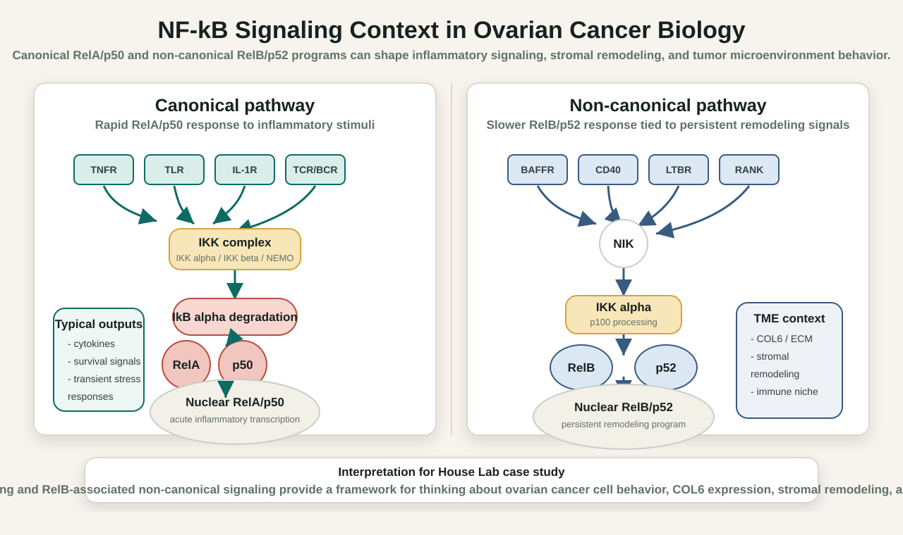

Research Context
Ovarian cancer signaling and extracellular-matrix changes that may influence cell behavior and treatment resistance.
Research exposure case study
Undergraduate research exposure centered on ovarian cancer biology, molecular signaling, and protein-expression analysis. This case study summarizes the research context, lab methods I learned or supported, and the skills I carried forward into research-support and biology data-analysis work.
Background
My House Lab work and related research writing focused on how molecular changes inside ovarian cancer cells can shape cancer progression, treatment resistance, and tumor behavior. The pathway context I studied included canonical and non-canonical NF-kB signaling, stem-like features, spheroid formation, EMT-associated genes, relapse, and treatment resistance.
Ovarian cancer signaling and extracellular-matrix changes that may influence cell behavior and treatment resistance.
COL6 protein-expression analysis using Western blot readouts and normalization across model conditions.
Practice thinking about readouts, controls, normalization, sample preparation, and careful experimental records.
Experience turning dense pathway biology into figures, notes, and application-ready research summaries.
Techniques
The lab meeting material documents the methods I was learning during the 2022-2023 House Lab period. The strongest signal is not one isolated figure; it is exposure to the chain of molecular biology and protein-analysis steps that connect samples to interpretable readouts.
Learned the basic workflow of breaking open cells, isolating RNA with kits, and using reverse transcriptase for cDNA synthesis before qRT-PCR.
Prepared reaction context involving cDNA, dNTPs, polymerase, QuantStudio amplification, and normalization with GAPDH as a housekeeping gene.
Learned how absorbance-based protein quantification supports Western blot sample loading decisions.
Documented the workflow from denaturing proteins and PVDF transfer through antibody incubation, washing, ECL, and iBright imaging.
Worked with COL6 protein-expression analysis using native Western blot data and GAPDH normalization across ovarian cancer model conditions.
Prepared or reviewed sample setup logic using protein concentration, target total protein, lysate, LDS, TCEP, and water volumes.
Sample Prep Evidence
The Western sample-prep sheet shows the operational side of the work: taking concentration values, targeting a consistent total protein amount, and calculating lysate and reagent volumes for samples such as RelA, RelB, negative-control, and OV90 conditions.
| Sample | Concentration (ug/uL) | Total Protein (ug) | What It Shows |
|---|---|---|---|
| RelA +dox01 | 1.949 | 26 | Consistent target protein load with calculated lysate and buffer volumes. |
| RelB +dox | 5.225 | 26 | Higher concentration sample requiring adjusted lysate volume. |
| neg +dox01 | 3.768 | 26 | Control-condition setup for comparison across model conditions. |
| OV90 +dox | 2.484 | 26 | Ovarian cancer model sample included in the preparation workflow. |
Supporting Visual
The figure is a communication artifact, not the main claim. It supports the research story by comparing canonical RelA/p50 signaling with non-canonical RelB/p52 signaling and connecting those pathways to COL6 expression, stromal remodeling, and tumor microenvironment context.

Skills Gained
Stronger understanding of how molecular and protein-analysis workflows connect sample prep to biological interpretation.
Practice thinking about concentration, loading, controls, GAPDH normalization, and how readouts support comparisons.
More confidence reading and organizing pathway biology around ovarian cancer signaling and extracellular-matrix context.
Experience translating lab exposure into clear summaries, pathway figures, and research-fit language for early-career roles.